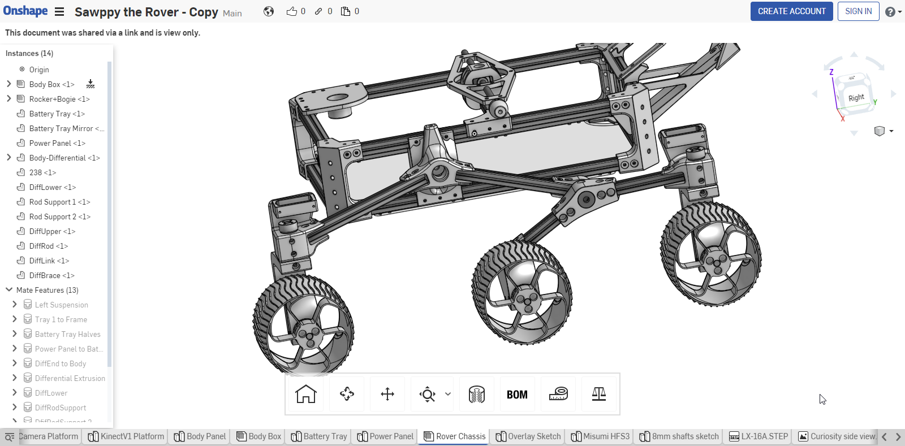

Solvespace 操作 <<
Previous Next >> Task3
Task2
分組作業:
請各組在實際安裝與操作 Inventor 2019、NX12、Solidworks 2017 Solidworks 2017 、Creo 6.0 與 Onshape 之後, 以協同模式製作一個帶有中文字幕的影片, 說明各套系統的安裝、認證設定與基本零組件繪圖功能後, 上傳至 Youtube 並內嵌至各分組網站中.
MCAD 套件安裝與設定, 零組件繪圖、轉檔與 CAE 工程分析.
請所有組員根據 https://2019wcm.blogspot.com/2019/07/autodesk-inventor-professional.html 中的說明, 在個人的桌上型電腦或筆電上安裝 AutoDesk Inventor Professional 2019. 並將詳細安裝與設定過程加以整理, 放入個人網頁中.
參考電子書:
Learn Autodesk Inventor 2018 Basics - 3D Modeling, 2D Graphics, and Assembly Design
請每位組員登入 @gm 電子郵箱, 下載 NX 12.0.2 安裝光碟, 或者下載 NX12.0.2 虛擬主機板本, 或者下載 NX12 可攜版本. 以便利用 NX12 執行下列專案的零組件設計繪圖與工程分析.
請每位學員參考 https://github.com/nasa-jpl/open-source-rover (提供 Solidworks 零組件檔案) 與 https://github.com/mdecourse/Sawppy_Rover (提供 Onshape 零組件檔案) 中的 Rover 設計, 分別利用 Inventor 2019 與 NX12 進行 Rover 零組件的設計與繪圖.
參考電子書:
2015 Space Modeling with SolidWorks and NX
登入 @gm 電子郵箱後, 下載上述 Inventor_nx_sw_onshape_ebooks.7z

Solvespace 操作 <<
Previous Next >> Task3